3.1 INLEIDING
Al het graaf- en onderzoekswerk wordt voor de wetenschap pas relevant wanneer de resultaten ervan ook behoorlijk gepubliceerd raken en opgepikt door de ruimere onderzoeksgemeenschap. In dit onderdeel gaan we na in hoeverre dit voor het onderzoek van het paleolithicum in Vlaanderen vlot verloopt. De gehanteerde opzet en werkwijze werd één op één overgenomen uit de eerste versie van de onderzoeksbalans en aangevuld met de nieuwe data.
Ook voor deze analyse werd terug vertrokken van de werkwijze zoals deze in de eerste versie van de onderzoeksbalans werd gehanteerd. Hierbij dient evenwel opgemerkt te worden dat bij de eerste analyse vooral een focus lag op het kwantificeren van wetenschappelijke publicaties, terwijl bij de actualisatie vooral onderzoeksrapporten werden gekwantificeerd.
Als basis voor deze analyse stelden we een zo exhaustief mogelijke lijst van de wetenschappelijke publicaties en rapporten over onderzoek van het paleolithicum in Vlaanderen samen. Om deze databank in dit hoofdstuk te laten fungeren als analyse-instrument hebben we er een aantal bewerkingen op toegepast en er vervolgens verschillende indexen in aangebracht.
De belangrijkste parameter om een idee te krijgen van de omvang van het gepubliceerde onderzoek is in dit geval, meer nog dan het aantal publicaties, de hoeveelheid nieuwe kennis. Deze trachten we uit te drukken in aantal bladzijden originele onderzoeksresultaten. Dit vergt natuurlijk wat evaluatie- en interpretatiewerk en verdient daarom enige toelichting. De volgende regels zijn hierbij in acht genomen:
Uitgangspunt en referentie is één pagina formaat A4 in een klassiek wetenschappelijk tijdschrift, genre Relicta of Archeologie in Vlaanderen. Voor de meeste referenties is bijgevolg effectief het aantal pagina’s genomen.
Voor publicaties (bijv. synthesewerken) die ook andere periodes of andere regio’s behandelen, is ingeschat hoeveel pagina’s hierin daadwerkelijk het paleolithicum in Vlaanderen tot onderwerp hebben. Wanneer binnen het paleolithicum verschillende fases aan bod komen is dit gewoon vermeld, zonder verdere opsplitsing van het aantal pagina’s.
Voor thesissen en andere ongepubliceerde manuscripten die openbaar toegankelijk zijn, hebben we een ingeschat hoeveel pagina’s het werk zou omvatten mocht het omgezet zijn naar een deftige wetenschappelijke publicatie. Indien dit effectief ook is gebeurd (bijv. in Terra Incognita), namen we enkel de omvang van het gepubliceerde werk op. Dit geldt ook voor doctoraatsverhandelingen die naderhand als boek werden gepubliceerd.
De algemene regel is dat in geval van meerdere publicaties over hetzelfde onderwerp, dezelfde pagina’s maar éénmaal werden geteld, in principe bij de hoofdpublicatie. Louter populariserende en vulgariserende werken over het onderwerp werden uitgesloten. Zij presenteren in de regel geen originele resultaten. Hetzelfde geldt voor cursussen en andere educatieve werken.
Zoals boven al vermeld, zijn zuiver geografische, geomorfologische, paleoklimatologische en andere natuurwetenschappelijke publicaties over deze periode niet opgenomen. Deze komen immers in andere hoofdstukken van de onderzoeksbalans aan bod. Wanneer het onderzoek wel direct in relatie staat tot de archeologische context (bijv. stratigrafie, datering), werd het wel opgenomen.
Evenmin geaccepteerd zijn loutere vondstmeldingen zoals die vroeger in Archeologie of in andere kronieken werden opgenomen. Aangezien deze de laatste jaren rechtstreeks aan de Centrale Archeologisch Inventaris worden doorgegeven, zou dit voor een scheeftrekking gezorgd hebben. Bovendien kunnen dergelijke signalementen meestal bezwaarlijk echt wetenschappelijk onderzoek genoemd worden.
Naast de omvang werd ook gekeken naar het jaar van publicatie. Om outliers enigszins te milderen, werkten we opnieuw met periodes van 5 jaar, voor de steentijd in het algemeen beginnend in 1870, voor het paleolithicum specifiek pas in 1905 (met de eerste publicatie van J. Hamal-Nandrin).
Voor het type van publicatie maakten we, zoals voorzien in de Bibliografie Onroerend Erfgoed Vlaanderen, een onderscheid tussen boeken, bijdragen in boeken (‘boekdelen’), tijdschriftartikelen, papers gepubliceerd in de proceedings van een congres, thesissen en andere ongepubliceerde rapporten. Geëditeerde boeken zoals handelingen van een congres komen niet als geheel aan bod, aangezien de verschillende (relevante) bijdragen in principe apart zijn opgenomen.
Om een idee te krijgen van het internationale potentieel van het gepubliceerde onderzoek is ook de taal geregistreerd waarin het werk is geschreven. In principe zou een bibliometrisch onderzoek met analyse van impactfactoren de beste methode zijn om de ontsluiting binnen het internationale onderzoek te meten. Mogelijk kan dit bij de volgende versie van de onderzoeksbalans aan bod komen. Voorlopig proberen we hier enkel een inschatting te maken op basis van eigen kennis en ervaring.
3.2 OVERZICHT VAN GEPUBLICEERD ONDERZOEK
Wanneer bovenstaande regels in acht genomen worden, beschikken we momenteel over een gegevensbank van ca. 440 wetenschappelijke publicaties en rapporten over paleolithicum in Vlaanderen.
Hoewel publicaties over steentijdvondsten in Vlaanderen al starten in de 19de eeuw en voor het paleolithicum specifiek in het begin van de 20ste eeuw, komt er pas na de Tweede Wereldoorlog enige regelmaat in het aantal publicaties, met een geleidelijke groei tot in de jaren 1970 (Figuur 13). Een plotse algemene toename treedt op in de jaren 1980, gevolgd door een duidelijke afname in de jaren 1990. Na de eeuwwisseling zien we opnieuw een lichte toename. De hoogste piek bevindt zich in het afgelopen decennium (2010-2019).
Hoewel het paleolithicum deze tendensen in het aantal publicaties in grote lijnen volgt, lijkt de groei hier iets vroeger te zijn gekomen (einde jaren 1970) en is de output voor deze periode sinds de jaren 1980 wat stabieler, zij het in lichtjes dalende lijn (Figuur 14). Deze relatieve stabiliteit kon hoger ook al worden opgemerkt in het aantal terreincampagnes sinds de jaren 1980 (Figuur 8). Sinds de opkomst van de archeologische privésector stijgt het aantal wetenschappelijke publicaties (in de vorm van rapporten) opnieuw. Vooral tussen 2010 en 2014 wordt een piek bereikt, die in het volgende jaarkwintet opnieuw afneemt. Hoe deze trend zal evolueren tussen 2020 en 2024 is onduidelijk.
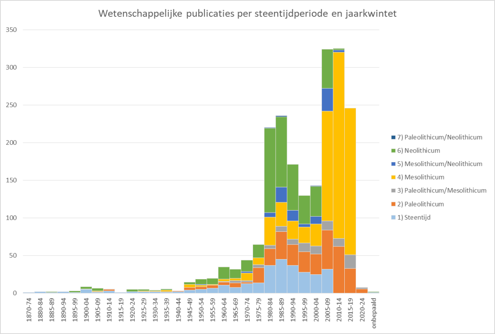
Aantal wetenschappelijke publicaties van steentijdonderzoek in Vlaanderen, per steentijdperiode en jaarkwintet.
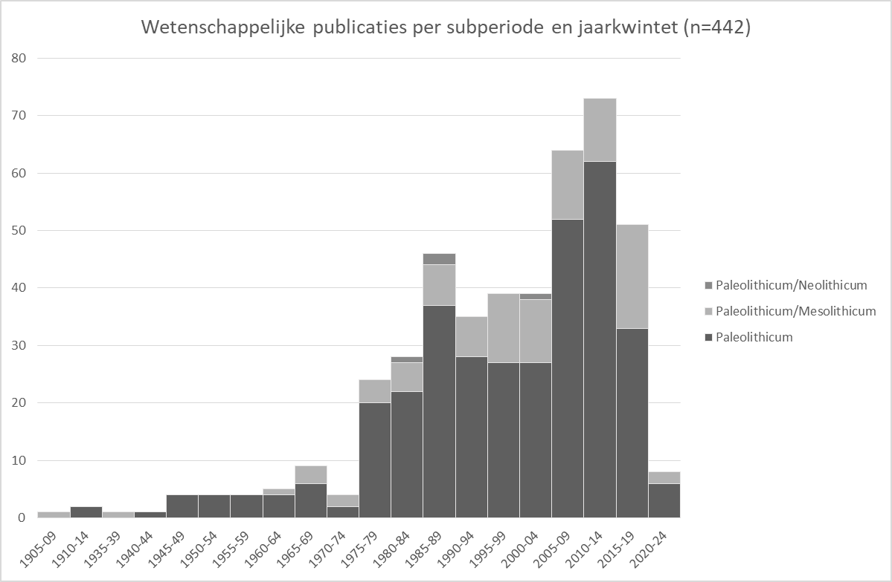
Aantal wetenschappelijke publicaties van (deels) paleolithisch onderzoek in Vlaanderen, per subperiode en jaarkwintet.
Zoals Figuur 15 doet blijken zijn de meeste publicaties van steentijdonderzoek in Vlaanderen in de vorm van tijdschriftartikels. Tijdschriftartikels vormen 55 % van de wetenschappelijke publicaties over het paleolithicum (Figuur 16). Ook het aantal rapporten met een paleolithische component is gestegen (ca. 17,5 %). Congrespapers, boekdelen en thesissen maken elk ongeveer 8 à 9 % van de publicaties uit.
Boeken (ca. 2,5 %) zijn duidelijk in de minderheid. Bovendien moet hierbij worden opgemerkt dat het meestal om synthesewerken gaat waarin ofwel de Vlaamse sites (bijv. in Schwabedissen1 of Rozoy2), ofwel het paleolithicum zelf (bijv. in Narr3 of Van Gils & De Bie4) maar in beperkte mate aan bod komen. De wetenschappelijke boeken die uitsluitend paleolithicum in Vlaanderen tot onderwerp hebben zijn tot hiertoe de monografieën over Meer5, Rekem6 en Zonhoven-
Molenheide7 en het overzichtswerk over het middenpaleolithicum in Noordwestelijk België boek8.
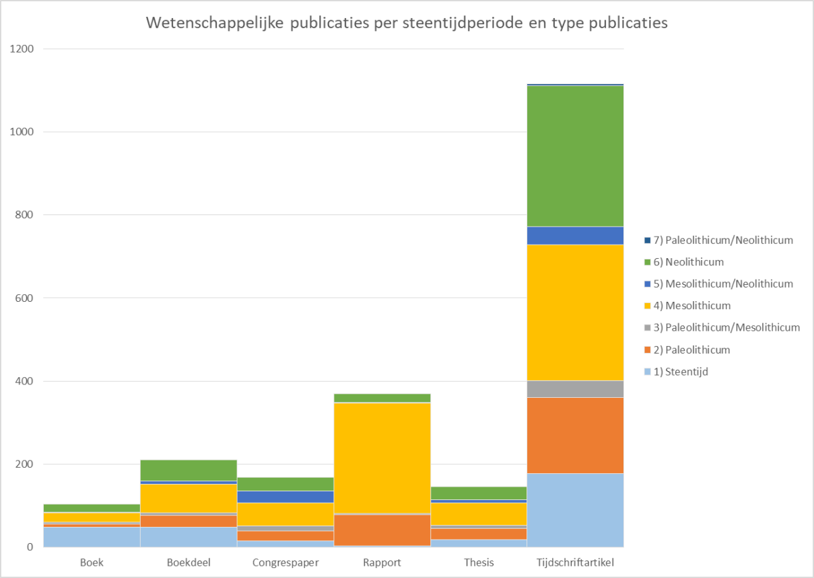
Aantal wetenschappelijke publicaties van steentijdonderzoek in Vlaanderen, per steentijdperiode en per type publicatie.
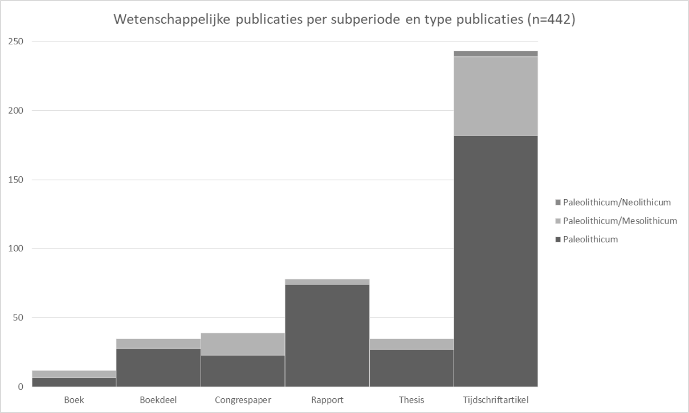
Aantal wetenschappelijke publicaties van (deels) paleolithisch onderzoek in Vlaanderen, per type publicatie.
Voor het steentijdonderzoek in het algemeen hebben tijdschriftartikels doorheen de jaren altijd het gros van het publicatietype uitgemaakt, met opnieuw een opvallende piek in de jaren 1980, gevolgd door een al even opmerkelijke terugval in de loop van de jaren 1990. Vanaf 2005 is terug een stijgende lijn te onderscheiden (Figuur 17).
Voor het paleolithicum komt de plotse groei er al in de tweede helft van de jaren 1970, waarna het aantal tijdschriftartikels gedurende 30 jaar (1975-2005) vrij stabiel blijft rond 20 publicaties per half decennium, met één opvallende piek (van meer dan 30 artikels) in de tweede helft van de jaren 1980 (Figuur 18). Vanaf 2005 is opnieuw een stijging in het aantal artikels te zien, die tot op heden vrij stabiliseert rond 30 artikels per jaarkwintet. Vanaf de jaren 1980 gaan ook de thesissen, congrespapers en boekdelen regelmatig een substantieel deel van de wetenschappelijke werken uitmaken, en hoewel de aantallen van de laatste twee publicatietypes vrij stabiel blijven doorheen de jaren, zien we een sterke terugval van thesissen over het paleolithicum in Vlaanderen vanaf de periode 2010-2014. Sinds het doctoraat van Van Baelen9 in 2014 slechts enkele thesissen een Vlaamse site met paleolithische component als hun onderwerp of in hun onderzoeksgebied. Sinds eind jaren 1990 maken ook de rapporten er deel van uit, en logischerwijze is er een enorme toename in het aantal vanaf de privatisering van de archeologiesector. Het effect begint duidelijk te worden in het jaarkwintet 20052009, maar komt pas in 2010-2014 op gelijke hoogte als het aandeel van wetenschappelijke artikels.
Figuur 19 toont dan weer een eerder beperkte onderzoeksoutput van de rapporten. De stijgende lijn in het aantal rapporten vertaalt zich niet in een stijging van het aantal pagina’s wetenschappelijk onderzoek voor dit publicatietype. Sinds de beginjaren 80 zijn de meeste pagina’s aan wetenschappelijk onderzoek afkomstig van tijdschriftartikels, en dit blijft de dominante categorie tot een serieuze terugval in het eerste kwintet na de eeuwwisseling. Daarna stijgt het aantal pagina’s tot de categorie tussen 2010-2014 opnieuw overheerst. Deze trend lijkt voort te duren. Boeken komen maar occasioneel uit, maar spelen natuurlijk wel een grote rol in de omvang van de onderzoeksoutput.
Dit komt het best tot uiting in het aantal gepubliceerde pagina’s origineel onderzoek over de jaren
heen. Dan zijn er immers opvallende pieken eind jaren 1970 (publicatie van Meer10) en rond de eeuwwisseling (publicatie van Rekem11). Vooraan in de jaren 1990 is er ook nog een monografie over het middenpaleolithicum12, die zoals gezegd meer in boekdelen is opgebouwd. Ook doctoraten kunnen natuurlijk een substantiële bijdrage leveren in de onderzoeksoutput, voor de laatste jaren ondermeer deze van Y. Perdaen13, P. Bringmans14 en bovengenoemde A. Van Baelen15.
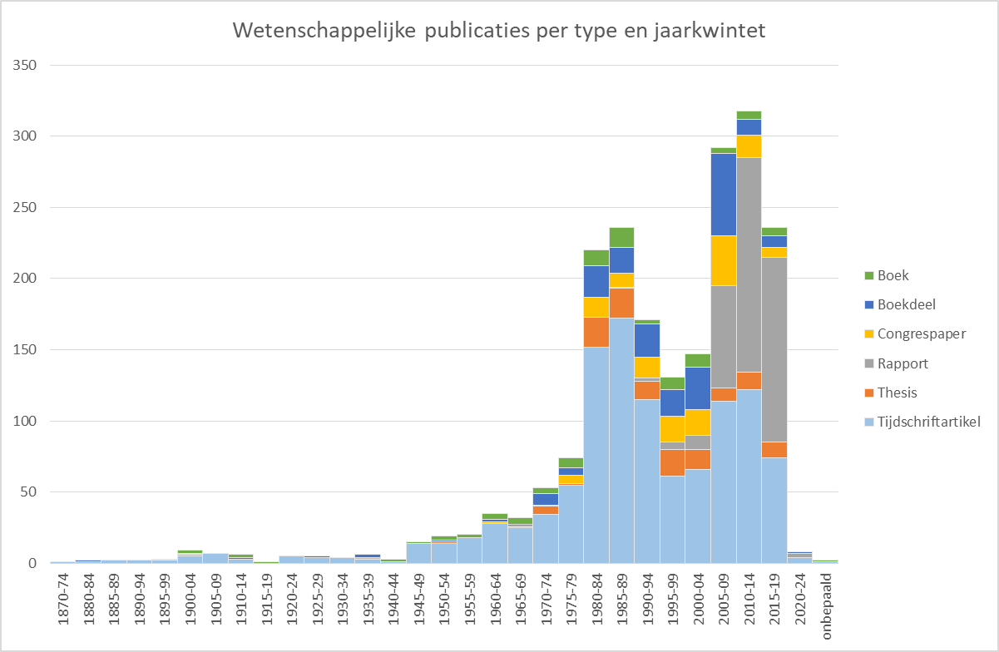
Aantal wetenschappelijke publicaties van steentijdonderzoek in Vlaanderen, per type publicatie en jaarkwintet.
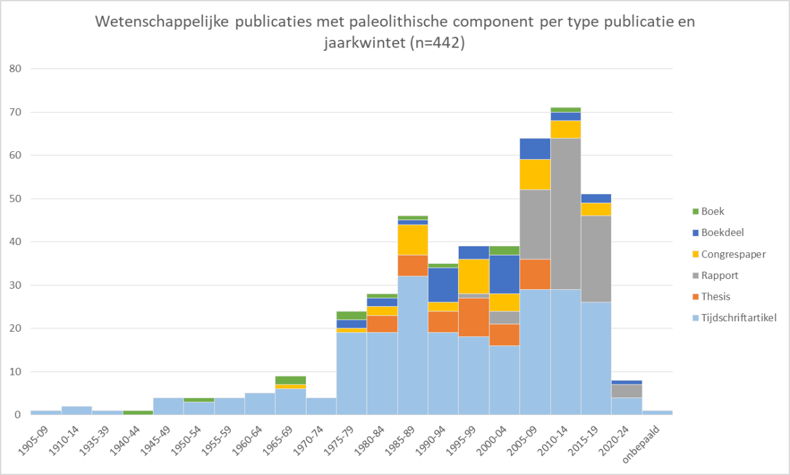
Aantal wetenschappelijke publicaties van paleolithisch onderzoek in Vlaanderen, per type publicatie en jaarkwintet.
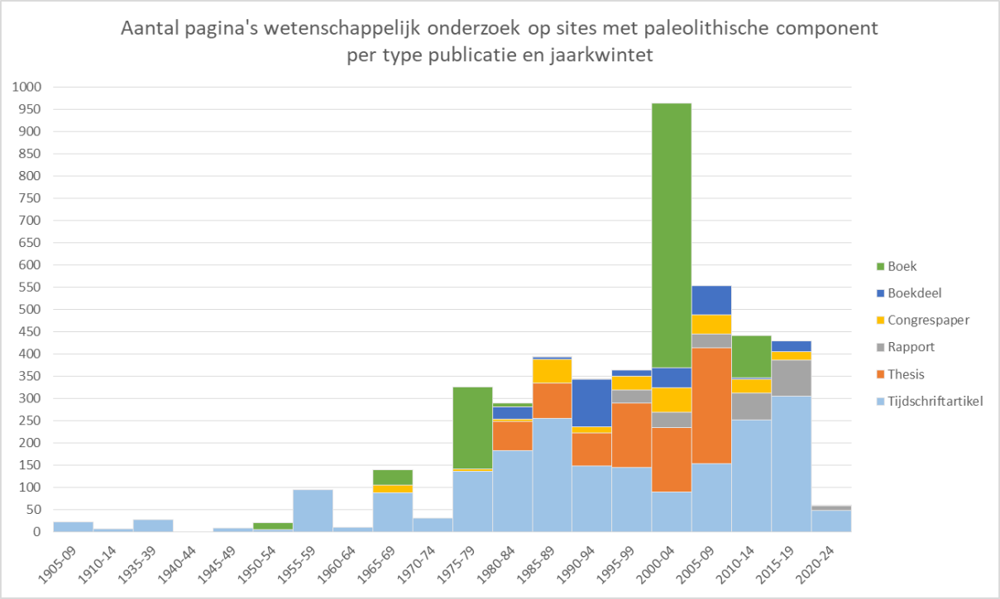
Figuur 19: Aantal wetenschappelijk gepubliceerde pagina’s over paleolithisch onderzoek in Vlaanderen, per type publicatie en jaarkwintet.
Dergelijke éénmalige uitgaven beïnvloeden natuurlijk ook in sterke mate het beeld van de populariteit van publicatietypes binnen de verschillende paleolithische subfases (Figuur 20). De pas genoemde thesissen en boekdelen zijn duidelijk herkenbaar in het relatief hoger aantal gepubliceerde pagina’s in dit type voor het middenpaleolithicum, terwijl de boeken zoals gezegd voornamelijk het finaalpaleolithicum behandelen. Hetzelfde geldt voorlopig voor de rapporten.
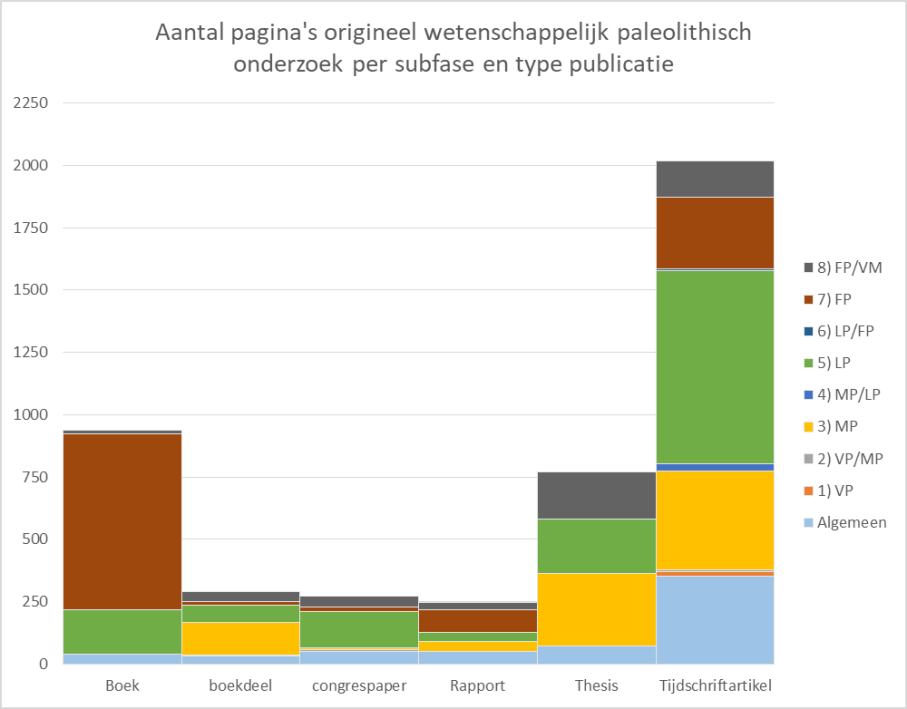
Aantal gepubliceerde pagina’s origineel wetenschappelijk onderzoek over paleolithicum in Vlaanderen, per subfase en type publicatie. Legende: VP = vroegpaleolithicum; MP = middenpaleolithicum; LP = laatpaleolithicum; FP = finaalpaleolithicum; MP/LP = combinatie.
In ieder geval blijven de tijdschriftartikels voor alle fases, en zowel in totale omvang aan pagina’s als zeker in aantal publicaties (Figuur 21) het belangrijkste kanaal voor de publicatie van onderzoeksresultaten over het paleolithicum in Vlaanderen.
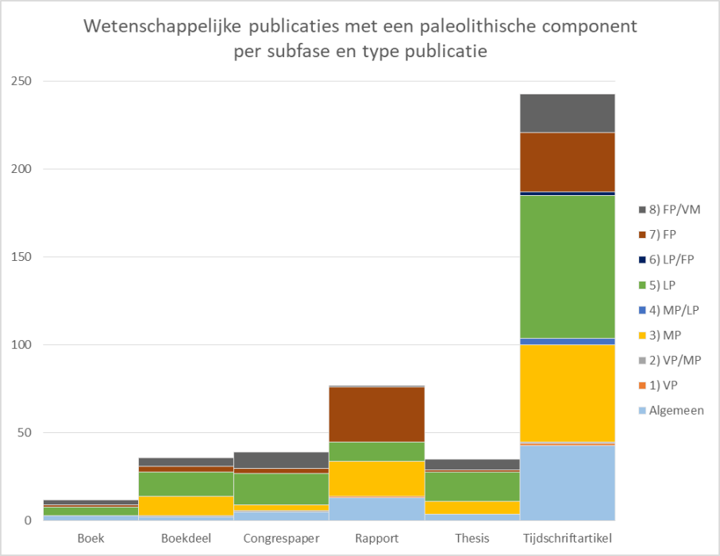
Aantal wetenschappelijke publicaties van paleolithisch onderzoek in Vlaanderen, per subfase en type publicatie. Legende: VP = vroegpaleolithicum; MP = middenpaleolithicum; LP = laatpaleolithicum; FP = finaalpaleolithicum; MP/LP = combinatie.
Als maatstaf voor de (potentiële) internationale verspreiding van het gepubliceerde onderzoek werd ook naar de taal van de werken gekeken. Daaruit blijkt dat ruim de helft (56,5 %) van alle wetenschappelijke publicaties over paleolithicum in Vlaanderen in het Nederlands uitgebracht zijn, een klein kwart in het Engels (24 %), een vijfde in het Frans (18 %) en een verwaarloosbaar klein percentage in het Duits (1,5 %; Figuur 22). Ook hier geeft dezelfde oefening een heel ander beeld voor het aantal gepubliceerde bladzijden originele onderzoeksresultaten. Dan blijken bijna evenveel pagina’s in het Engels (39,3 %) als in het Nederlands (39,5 %) te zijn gepubliceerd en volgt het Frans pas op de derde plaats met slechts 19,7 % (Figuur 23).
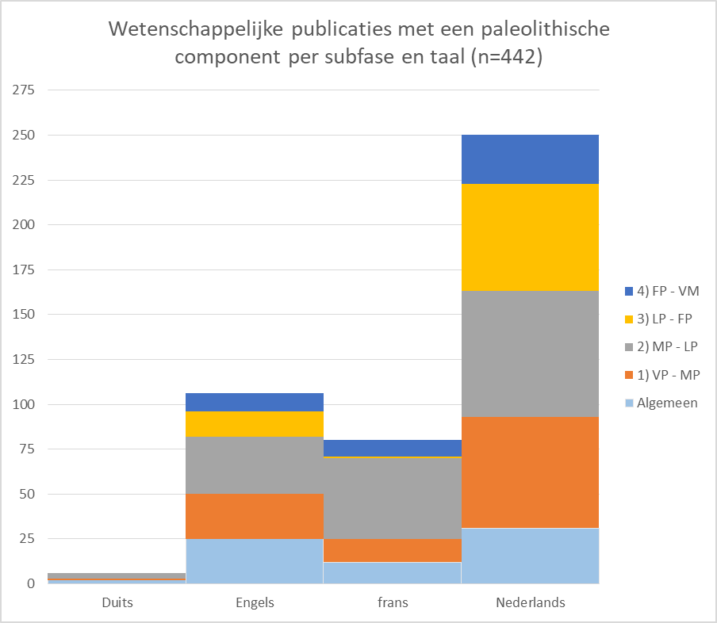
Aantal publicaties wetenschappelijk onderzoek over paleolithicum in Vlaanderen, per subfase en per taal waarin werd gepubliceerd.Legende: VP – MP = vroeg- tot middenpaleolithicum; MP – LP = midden- tot laatpaleolithicum; LP – FP = laat- tot finaalpaleolithicum; FP – VM = finaalpaleolithicum tot vroegmesolithicum.
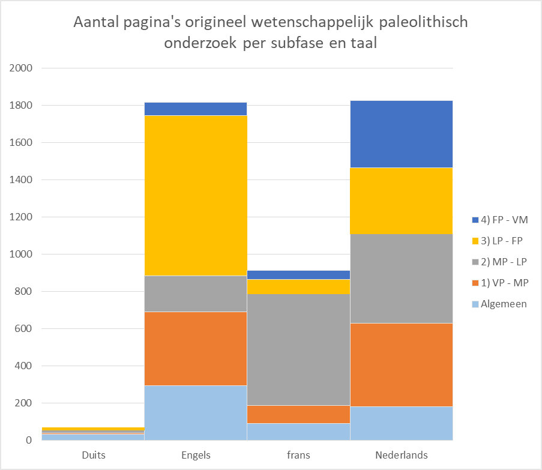
Aantal gepubliceerde pagina’s origineel wetenschappelijk onderzoek over paleolithicum in Vlaanderen, per subfase en per taal waarin werd gepubliceerd. Legende: VP – MP = vroeg- tot middenpaleolithicum; MP – LP = (overgang midden- tot) laatpaleolithicum; LP – FP = (overgang laat- tot) finaalpaleolithicum; FP – VM = (overgang finaalpaleolithicum tot vroegmesolithicum.
In de pioniersjaren en tot in de jaren 1970 domineerde het Frans als wetenschappelijke taal het paleolithicumonderzoek in Vlaanderen in het aantal publicaties (Figuur 24). In de tweede helft van de jaren 80 kent het aantal Franstalige publicaties een piek. Na deze piek neemt de populariteit van het Frans echter af. Het aantal onderzoeken die in het Frans verschijnen blijft de laatste decennia klein. Het Engels komt pas schuchter opzetten vanaf einde jaren 1970, maar gaat vanaf de jaren 1990 het Frans domineren. In het jaarkwintet 2015-2019 is ook een plotselinge toename in Engelstalige publicaties te zien. Het spreekt voor zich dat, om internationaal enige relevantie te hebben en de kwaliteit te blijven bewaken, ook in de toekomst Engelstalige publicaties moeten worden aangemoedigd. In Figuur 24 zien we ook het effect van de opkomst van de privésector: na een graduele opkomst van Nederlandstalige publicaties tussen 1975 en 2004, stijgt het aantal abrupt vanaf 2005 om een piek te bereiken in het jaarkwintet 2010-2014. Sinds 2015 wordt echter weer een daling in het aantal publicaties in het Nederlands genoteerd.
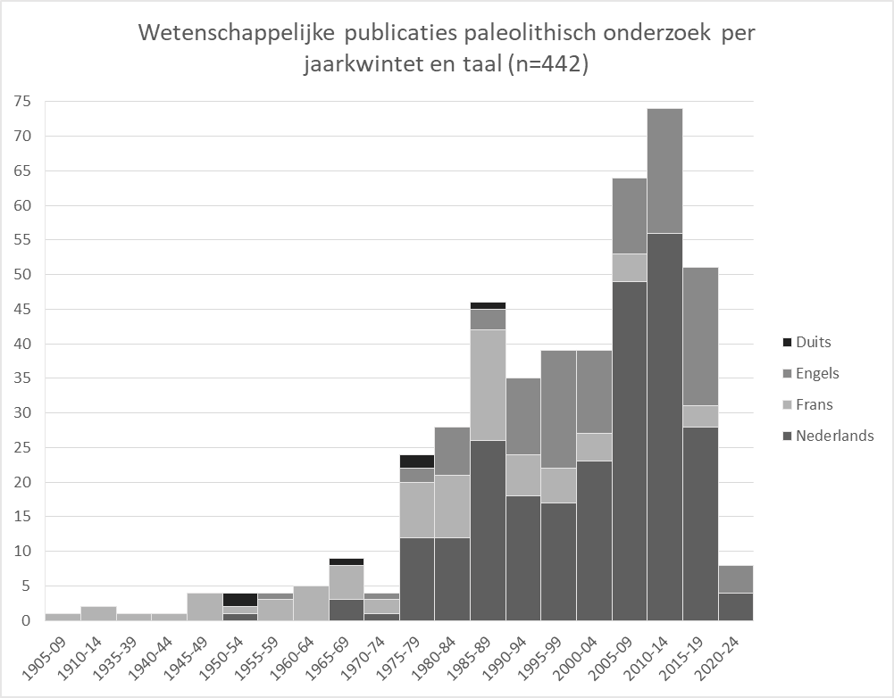
Aantal publicaties origineel wetenschappelijk onderzoek met een paleolithische component in Vlaanderen, per jaarkwintet en taal waarin werd gepubliceerd.
De tendenzen die in Figuur 24 te zien zijn vertalen zich niet helemaal in Figuur 25. In de periode tussen de pioniersjaren en 1980 domineerde het Frans ook in het aantal gepubliceerde pagina’s duidelijk als wetenschappelijke taal het paleolithicumonderzoek in Vlaanderen. Het aantal Franstalige pagina’s daalde daarna in het voordeel van Nederlandstalige literatuur.
Een trend die zich dan weer niet vertaalt, is de abrupte stijging in het aantal Nederlandstalige publicaties; deze is niet terug te vinden in het aantal pagina’s. Hieruit is dus te concluderen dat paleolithische vondsten vaker gerapporteerd werden, maar dat er minder pagina’s aan die rapportage werden gespendeerd. Dat is enigszins te verklaren door de reeds eerder aangehaalde observatie dat een groot deel van de nieuwe vindplaatsen uit losse vondsten bestaat die tijdens onderzoek naar jongere periodes is aangetroffen. Voor de vindplaatsen die wel verder onderzocht werden, dient rekening gehouden te worden met het feit dat het wettelijk kader voor Malta-archeologie enkel een basisassessment oplegt en dus geen opportuniteiten creëert voor een diepgaandere uitwerking van de onderzoeksresultaten. De output van dergelijk onderzoek blijft dan ook voorlopig beperkt.
De piek in het aantal Engelstalige pagina’s rond de eeuwwisseling is te verklaren door de publicatie van het boek over Rekem.
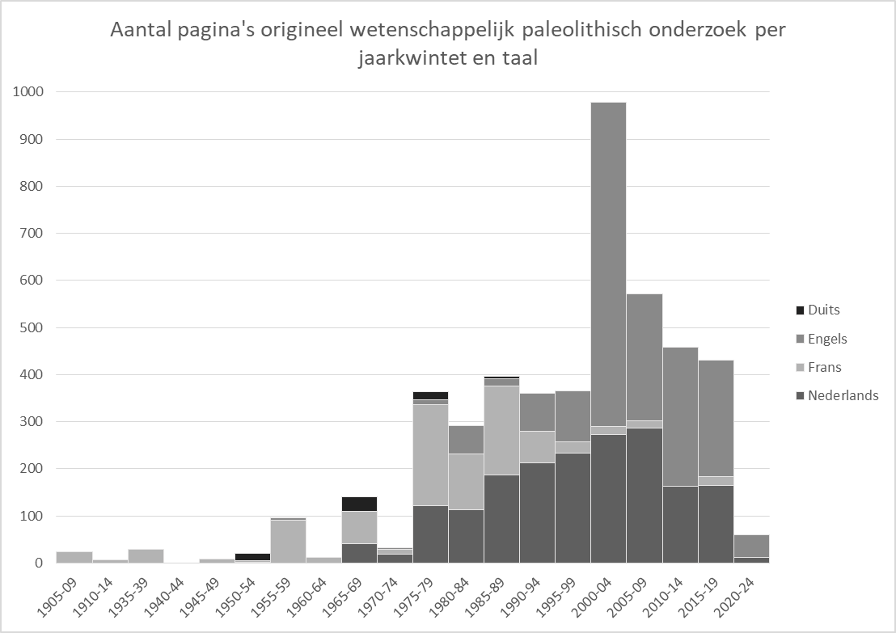
Aantal gepubliceerde pagina’s origineel wetenschappelijk onderzoek over paleolithicum in Vlaanderen, per jaarkwintet en taal waarin werd gepubliceerd.
Algemeen kan worden aangenomen dat doorgedreven studie en publicatie voornamelijk door doctoraten mogelijk worden gemaakt (Crombé, De Bie, Perdaen, Bringmans, Van Baelen en recentelijk Vandendriessche). Daarbuiten blijft de wetenschappelijke ontsluiting te vaak beperkt tot basisrapportage of het publiceren van deelonderzoek. Bovendien stellen we vast dat de recente ontwikkelingen op vlak van preventieve archeologie in Vlaanderen deze tendens nog versterkt. De verplichte aanlevering van eindrapporten binnen een bepaalde termijn heeft weliswaar een positief effect. Echter, de minimale eisen, opgenomen in de code van goede praktijk, beperken zich tot een beknopt basisassessment. Binnen een commercieel gegeven is er dan ook geen hefboom meer voor meer doorgedreven onderzoek en blijft veel potentiële kenniswinst onontgonnen.
Daarnaast kunnen we zeker pleiten voor het ontwikkelen van synthesewerken. Voor het middenpaleolithicum in België focusten deze zich in de 20ste eeuw zeer sterk op de grotsites in het bekken van de Maas16 en op de openluchtsites in de Hainevallei17. De sites in Vlaanderen kwamen hierin nauwelijks aan bod. In het boek van Crombé & Van der Haegen18 is wel een synthese te vinden en ook P. Van Peer heeft in zijn overzicht naar aanleiding van het UISPP-congres in Luik170 wel enige aandacht voor Vlaanderen, maar het blijft al bij al vrij beperkt. Naar aanleiding van het onderzoek te
Kesselt, Veldwezelt en Oosthoven is er in de recente overzichten wel meer aandacht voor Vlaanderen. Zo werden heel wat Vlaamse sites opgenomen in het doctoraatsonderzoek en daaropvolgende publicaties van K. Di Modica (ULiège) dat handelde over grondstofgebruik en lithische technologie tijdens het middenaleolithicum in België19. Daarnaast zijn er diverse bijdragen over het middenpaleolithicum opgenomen in het boek ‘Le Paléolithique moyen en Belgique. Mélanges Marguérite Ulrix-Closset’20.
Voor de finaalpaleolithische vindplaatsen in de Kempen zijn een aantal overzichten gepubliceerd21. Naar aanleiding van de diverse onderzoeken in zandig Vlaanderen naar finaalpaleolithische vindplaatsen zijn recent diverse overzichtsartikels verschenen met een sterke paleoecologische invalshoek174.
Schwabedissen 1954.↩︎
Rozoy 1978.↩︎
Narr 1968.↩︎
Van Gils & De Bie 2002.↩︎
Van Noten 1978.↩︎
De Bie & Caspar 2000.↩︎
Vermeersch 2015.↩︎
Crombé & Van der Haegen 1994b.↩︎
Van Baelen 2014.↩︎
Van Noten 1978.↩︎
De Bie & Caspar 2000.↩︎
Crombé & Van der Haegen 1994b.↩︎
Perdean 2004.↩︎
Bringmans 2006.↩︎
Van Baelen 2014.↩︎
Ulrix-Closset 1975.↩︎
Cahen 1984, 133-155. Cauwe et al. 2001.↩︎
Crombé & Van der Haegen 1994b. 170 Van Peer 2001, 11-20.↩︎
Di Modica 2010.↩︎
Toussaint et al. (red.) 2011.↩︎
O.m. De Bie & Vermeersch 1998, 29-43; De Bie & Van Gils 2006b, De Bie et al. 2009. 174 O.m. Crombé 2019; Crombé 2020; Crombé et al. 2020.↩︎